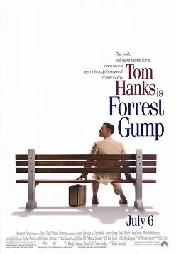

_(cropped).jpg){kind=link}
 Explore film ↗
Explore film ↗Romancing the Stone
Robert Zemeckis
DIRECTOR PROFILE
Robert Lee Zemeckis (born May 14, 1951), sometimes called Bob Zemeckis, is an American filmmaker.

LIFE & CAREER
Robert Lee Zemeckis (born May 14, 1951), sometimes called Bob Zemeckis, is an American filmmaker. Known for directing and producing a range of successful and influential films that often blend cutting-edge visual effects with storytelling in the late 20th century, he has received accolades such as an Academy Award and a Golden Globe Award, as well as nominations for five British Academy Film Awards and a Daytime Emmy Award. Zemeckis gained some recognition for his short film A Field of Honor (1973), which earned him a Student Academy Award for Special Jury Prize at USC.
Adapted excerpt from Wikipedia, CC BY-SA 4.0. Pronunciation notes omitted.
Read the full biographyImage: Dick Thomas Johnson from Tokyo, Japan. Source & rights: CC BY 2.0 ↗.
Profile reference: Director background ↗
Open this director checklist ↗
A selection of this director’s films available in the archive.
Explore film ↗Robert Zemeckis

Explore film ↗Robert Zemeckis
 Explore film ↗
Explore film ↗Robert Zemeckis